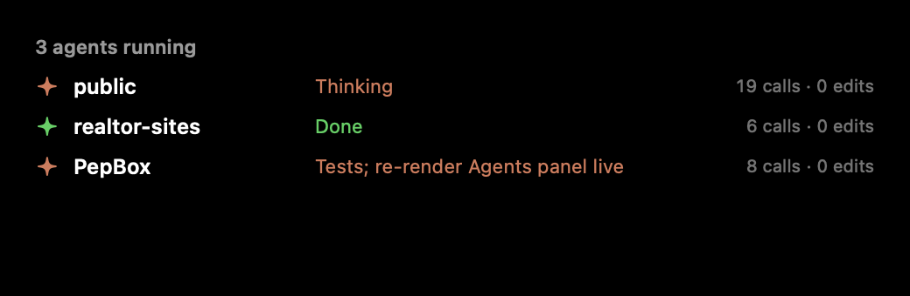
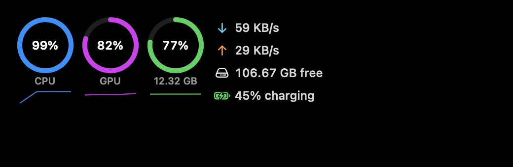
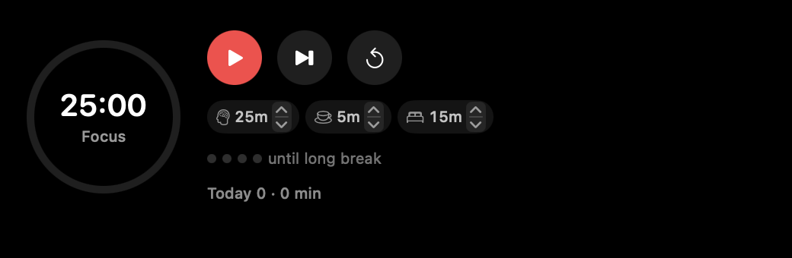
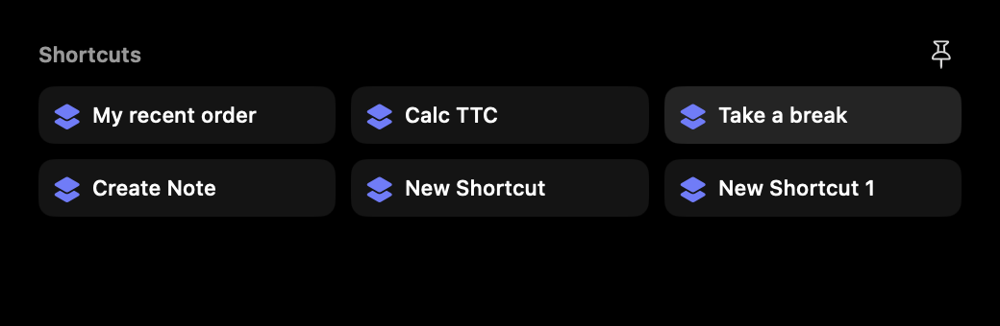

A shelf for anything
Drop files on the notch to hold them. Send them with AirDrop, LocalSend, Messages or a QR code, or resize, convert and zip them in place.
The shelfPepBox turns the notch into a shelf for files, a clipboard that remembers, a search bar that answers, and live activities that keep you posted.
Hover the notch or drag a file toward it. PepBox opens right where you were already looking.
Drop files on the notch to hold them. Send them with AirDrop, LocalSend, Messages or a QR code, or resize, convert and zip them in place.
The shelfPress ⌥Space for your history. Paste several items in order, queue copies, and float anything on screen.
ClipboardApps, files, math, time zones, timers, calendar events and Mac commands from one bar: ⌃⌥Space.
Quick SearchTimers, meetings, downloads, coding agents and eye breaks show up beside the notch, then get out of the way.
Live ActivitiesNow playing with synced lyrics, plus cleaner volume, brightness, battery and AirPods indicators.
Media and HUDsTurn on only what you want: Pomodoro, Window Snap, System Stats, Snippets, Teleprompter, LocalSend and more.
Browse extensionsPress ⌃⌥Space and start typing. Answers copy with Return. Not sure what it knows? Type ?.
Add the ones you use. Leave out the rest.




Yes. No accounts, no trials, no paid tier. The source is on GitHub.
No. On Macs without a notch, and on external displays, PepBox shows a small floating pill at the top of the screen instead.
macOS 14 Sonoma or later.
No analytics and no tracking. A few features reach the network when you use them, and they are all listed on the privacy section of the help page.